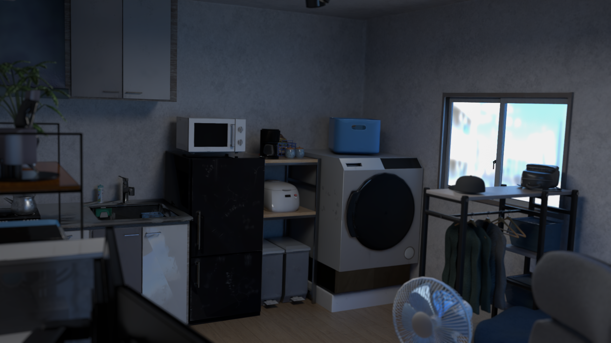
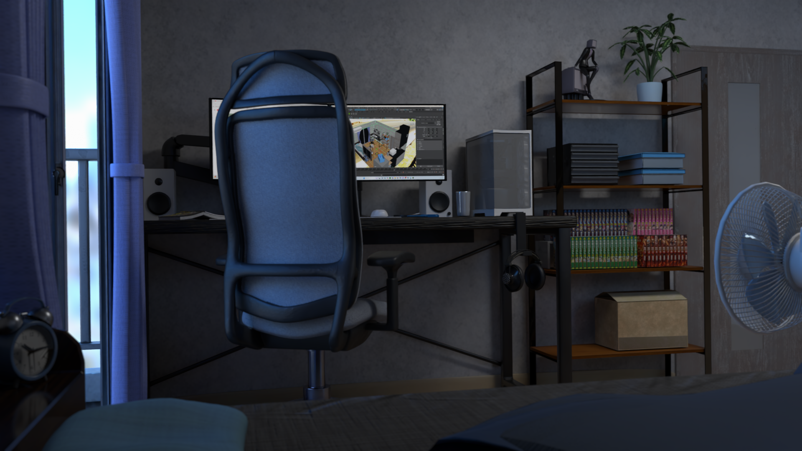
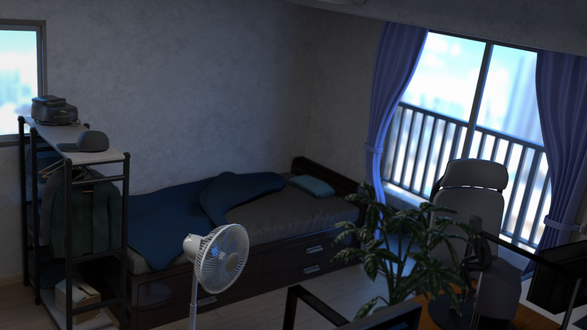
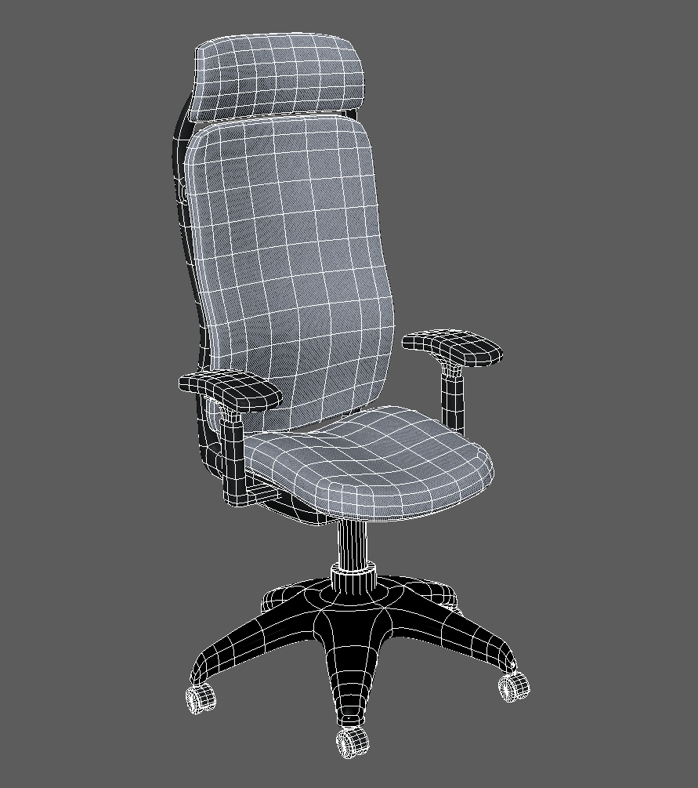
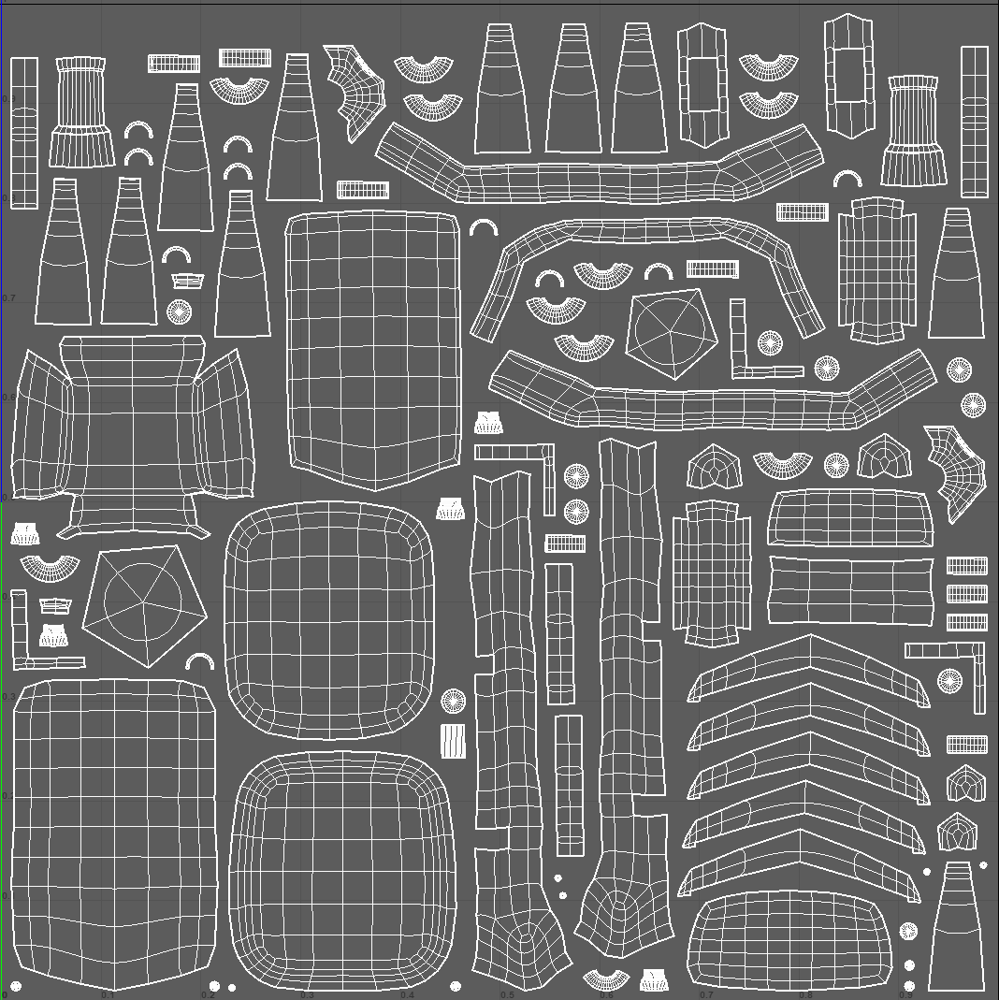
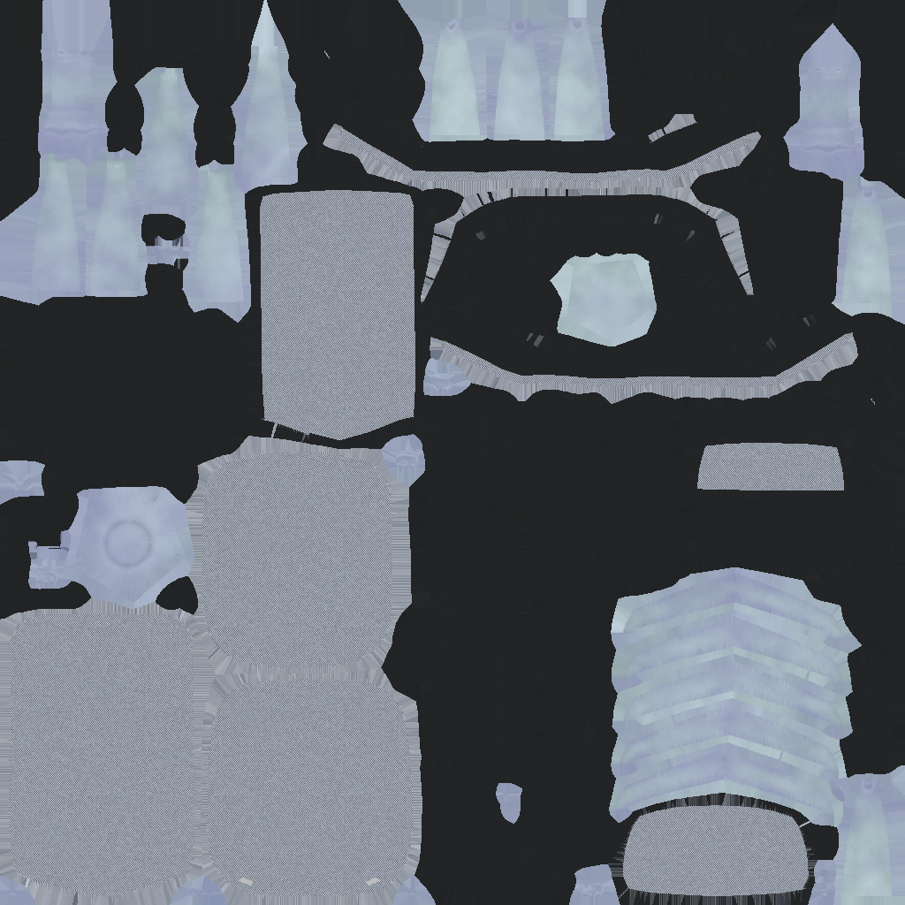
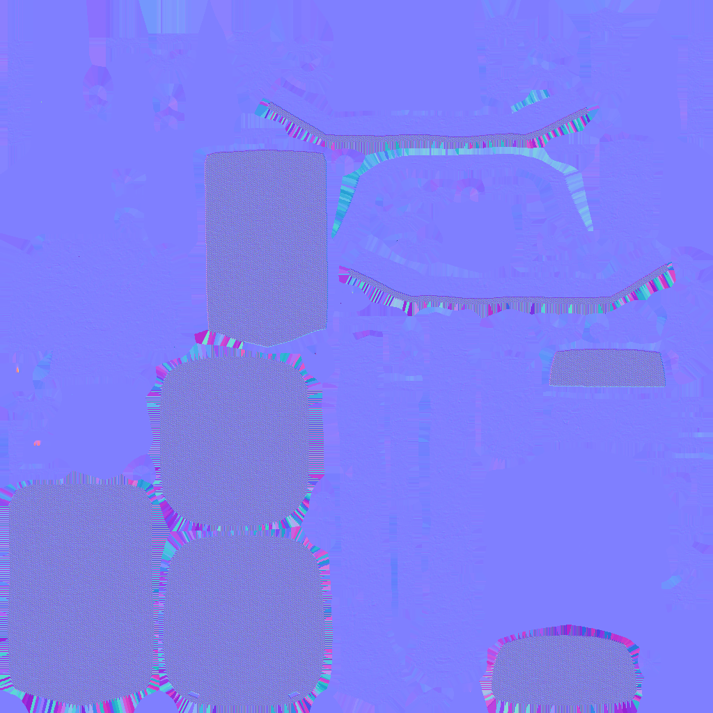
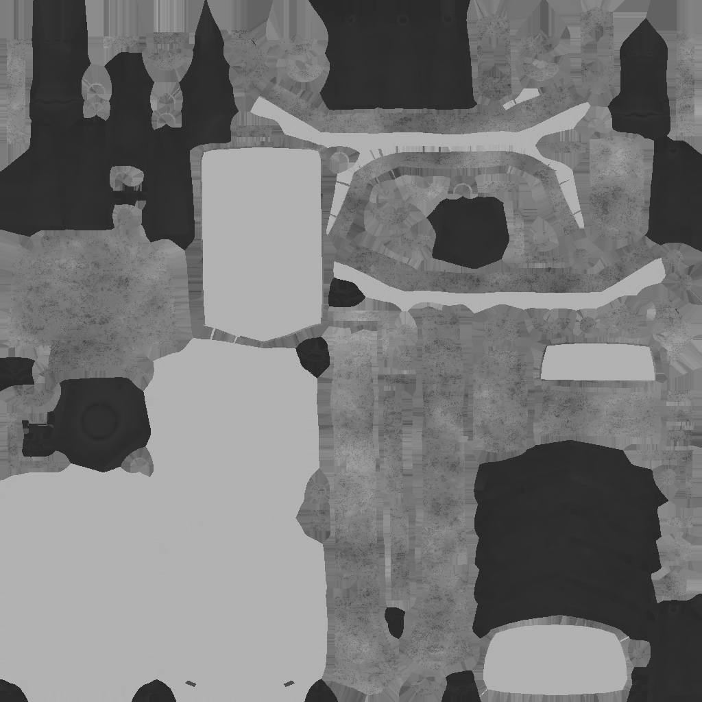

01 / BACKGROUND
Japanese Room

OVERVIEW
Room Environment
日常的な日本のワンルームをイメージした室内背景モデル。家具・家電・小物を配置し、生活感のある空間として構成しています。
ライティングとマテリアルを調整し、窓から入る光と室内の暗部のコントラストを意識してレンダリングしました。
Other images
Texture・UV



TEXTURE / UV
Texture・UV
モデル

UV

テクスチャ

ノーマルマップ

ラフネスマップ

SOFTWAREMaya
CATEGORYBackground / Environment
ROLEModeling / Lighting / Rendering